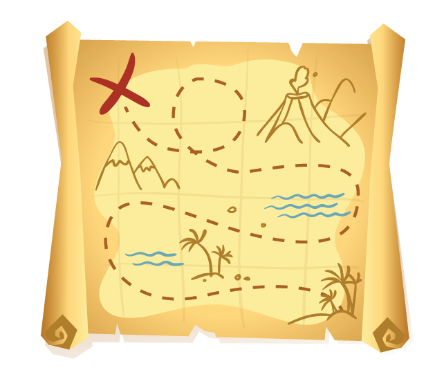
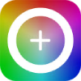

Nova atualização
Pacote de downloads: AQUI
Oque é?
Esse guia não tem valor comercial algum! Sua função assim como a de qualquer guia ou mapa é puramente ajudar o autor ou a qualquer um que o considerar útil a chegar em seu objetivo ou informação o mais rápido possível, com no máximo um click, sendo muito útil em situação como quando acessamos um novo computador e desejamos reinstalar todas ou parte de nossas principais tecnologias. Sem mais enrolações, se você é novo ou não, seja bem vindo ou bem vindo de volta! Por fim, caso seja eu do futuro nunca esqueça, você colocou foco e dedicação nesse projeto de estudos e se mantiver sempre esse foco você irá muito longe, eu acredito em você. Boa leitura a todos! :D
Minhas instalações e seus downloads
VsCode
Vs é o melhor editor de códigos da atualidade, possui uma vasta gama de extensões que tornam suas possibilidades de trabalhar praticamente ilimitadas, além de diversos comandos auxiliares que uma vez dominados (já que com certeza não queremos nos tornar copiadores de códigos) facilitam e muito o bom uso da programação. ver mais aqui: Ver mais

GIMP
Editor de imagens gratuito mais completo. Substitui o photoshop em muitos aspectos e é de fácil download

Handbrake
Conversor de vídeos gratuito, útil para situações de "source", onde você coloca várias opções de formato do mesmo vídeo, para que o navegador caso não reconheça o primeiro formato, reconheça o segundo e por aí vai.

Google Extensões
Web Developer
Permite desativar funções de páginas como "Java Script" ou "CSS". ir para a página de download.
ColorZilla
Permite coletar os hexadecimais de uma cor de qualquer site que tenha gostado, com um conta gotas, basta apontar o mouse para a cor que deseja obter. ir para a página de download.
VS Code
Extensões
- Omni theme:
Meu tema de fundo preferido, deixa o background do "VS Code" mais atrativo.
- Portuguese (Brazil) Language Pack for Visual Studio Code
Traduz grande parte do "VS Code" para o português brasileiro.
- Live Server
Após abrir sua pasta contendo seu documento "index" e inserindo o comando "ALT + L + O" abre o navegador sozinho e atualiza seu código automaticamente toda vez que salvo, tirando a necessidade de atualizar a página. (Se torna ainda mais útil combinando com o salvamento autático citado em salvamento automático).
- vscode-icons
Personaliza e deixa seus arquivos com ícones melhores.
Configurações importantes
- Word-Wrap
Permite que o VsCode efetue quebras de linha assim que o texto chegue ao limite visual da janela do
VsCode.
Caminho: Gerenciar/Configurações/Editor: Word-Wrap/on
- Salvamento automático
Com essa opção o VsCode irá salvar seu código em tempo real.
Caminho: Arquivo/Salvamento Automático
Comandos importantes
- Identação
- Modificar várias linhas ao mesmo tempo
- Comentários no código
- Envelopar uma tag
Alt+Shift+F
Alt + click na parte das linhas que deseja alterar.
Ctrl(esq)+;
Ctrl + shift + p / digitar abbr, e quando estiver em primeiro apenas dar enter / selecionar a opção escrever o conteúdo da tag.
Sites e informações relevantes
Photopea
Um site similar ao GIMP e Photoshop, porém online diferente do primeiro e de graça diferente do último.
Emojipedia
Site para consultar códigos de emojis e tornar eles reconhecíveis para qualquer navegador.ir para a página.
AdobeColor
Te dá a opção de escolher cores a partir de regras de harmonia, também extrai cores a partir de imagens e degradês ir para a página.
Paletton
Te permite visualizar uma paleta de cores em um site, para ter uma ideia prévia de como ficaria. ir para a página.
Coolors
Te ajuda a escolher uma paleta de cores, você tranca a primeira cor que gostar, e então ele começará a indicar cores que combinem com ela ir para a página
Sites de imagens sem direitos autorais
Sites para favicon
IconArchive
Site para baixar favicons prontos.
favicon.cc
Site para desenhar seus próprios favicon
favicon.io
Site para transformar uma foto em favicon.